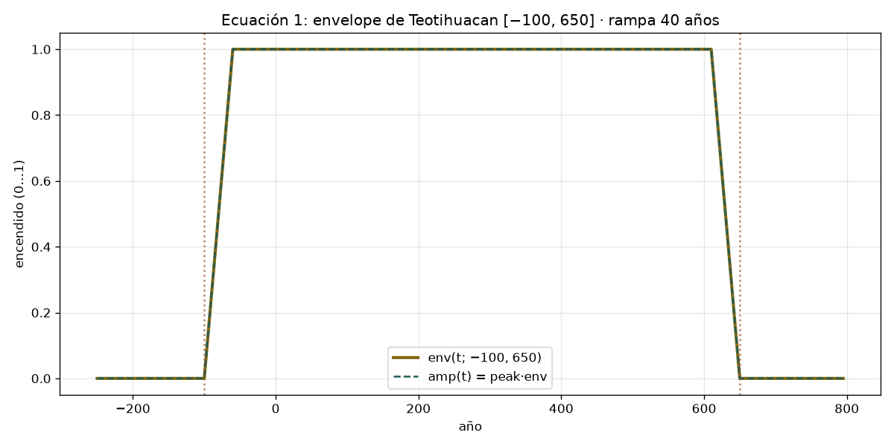
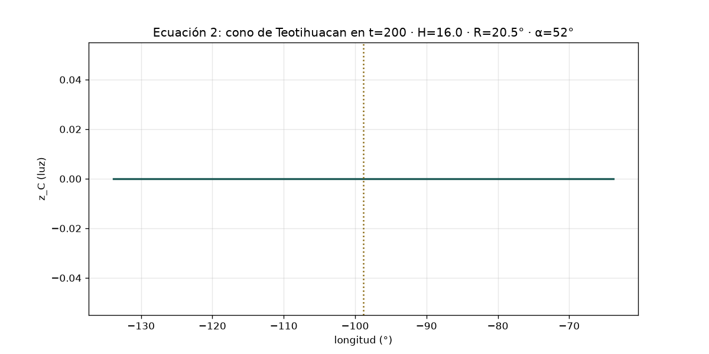
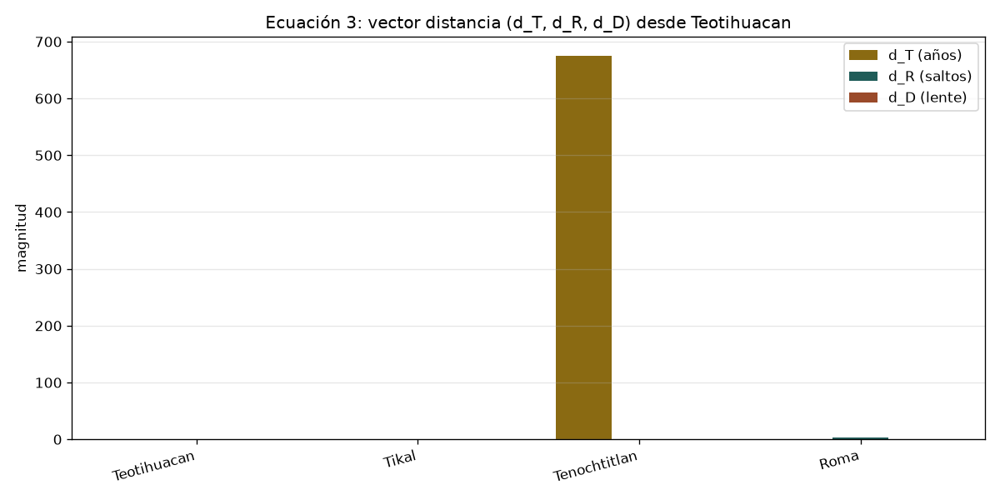
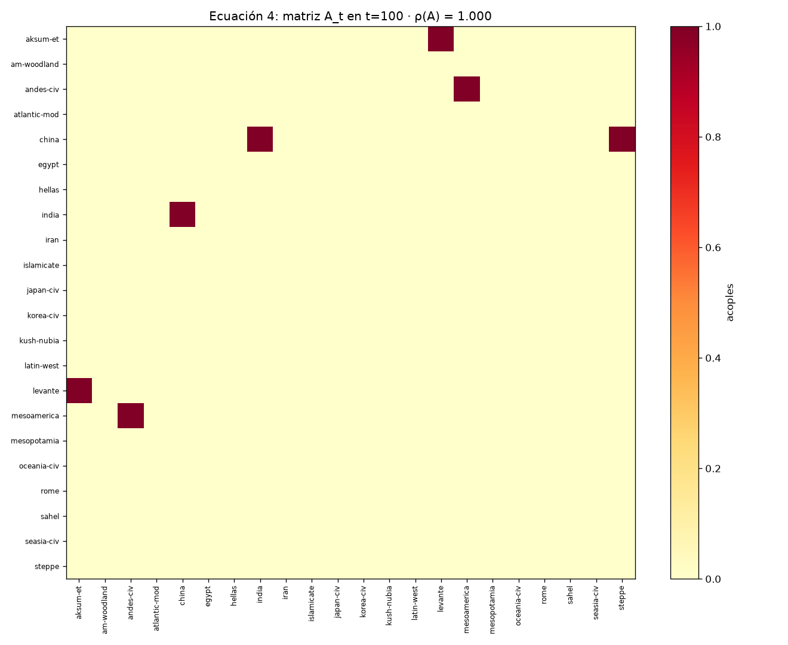
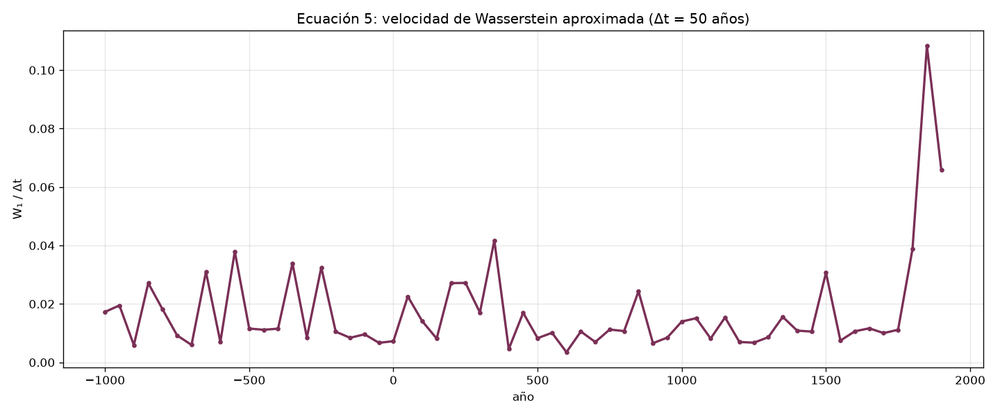
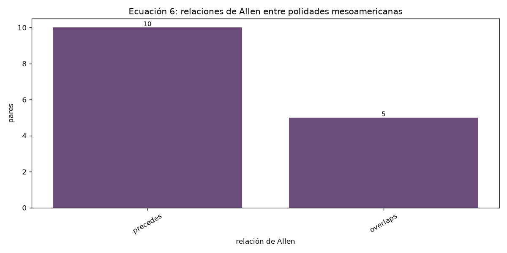
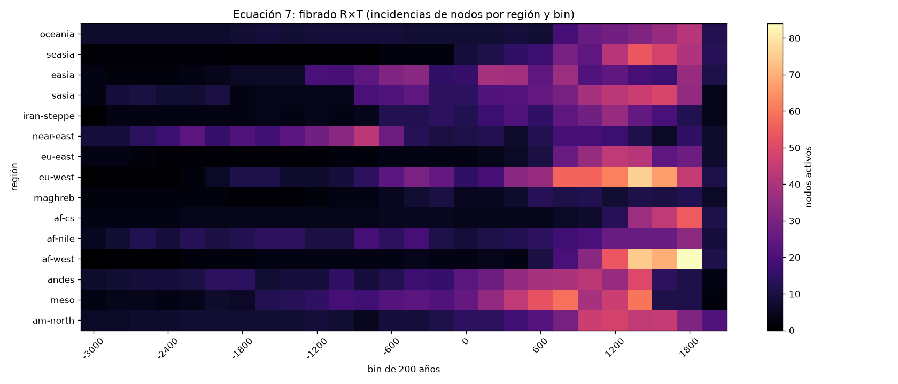

Cada figura es una instantánea del mismo corpus: 2336 nodos, 22 fibras, 81 conos. No se inventan datos.
env(t; t₀, t₁) apaga y enciende cada cono con una rampa de 40 años. Teotihuacan se apaga en 700.

z_C(x,t) = H·max(0, 1 − dist/R). La luz cae linealmente hasta el radio R = H·tan(52°).

(d_T, d_R, d_D) mide años de separación, saltos de región y lentes compartidos.

A_t es la matriz de tinta entre conos en una ventana; ρ(A) mide si la copia crece sola.

W₁/Δt es la velocidad con que la sábana de lentes se reacomoda entre dos años.

Allen(a,b) clasifica cómo se tocan dos intervalos temporales.

R×T organiza los nodos del corpus en regiones y bins de tiempo.
